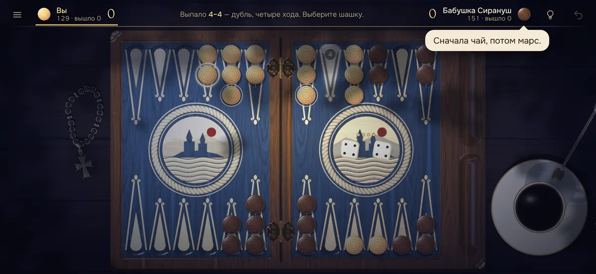
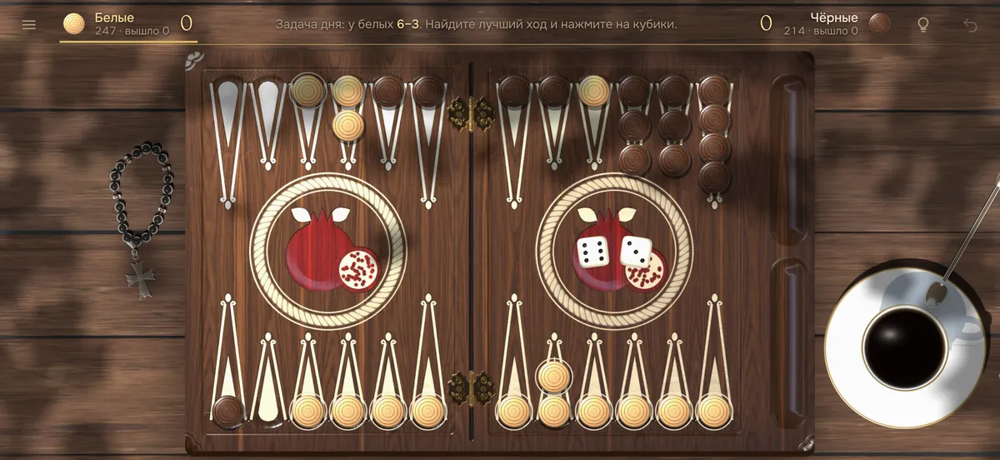

Короткие нарды: правила игры
Короткие нарды — классический вариант, известный во всём мире как backgammon. В отличие от длинных, здесь шашки бьют, поэтому партия острее и быстрее. Вот правила по порядку.

Расстановка
У каждого 15 шашек, и они сразу расставлены на доске: 2 + 5 + 3 + 5. Две шашки стоят в самом дальнем пункте, пять — в середине пути, три — у входа в дом и пять — в своём доме. Игроки идут навстречу друг другу.
Ход
- Два кубика — два хода, на каждое число отдельно или одной шашкой подряд.
- Дубль играется четыре раза.
- Если можно сыграть оба кубика — обязательно оба; если только один — больший.
Бой и бар
Закрытый пункт
Пункт, где стоят две и больше чужих шашки, закрыт.
Одиночная шашка — под боем
Если на пункте стоит одна чужая шашка, на него можно встать — она сбита и уходит на бар (середину доски).
Ввод с бара
Пока у вас есть шашка на баре, другими ходить нельзя: сначала её нужно ввести в дом соперника на пункт по числу кубика. Если он закрыт — ход пропадает.
Выброс и счёт
Выбрасывать можно, когда все 15 шашек в доме. Если вашу шашку сбили во время выброса — сначала её нужно вернуть домой.
| Итог | Когда | Очки |
|---|---|---|
| Победа | вы выбросили все шашки первым | 1 |
| Марс | у соперника ничего не выброшено | 2 |
| Кокс | у соперника ничего не выброшено, и его шашка ещё на баре или в вашем доме | 3 |
Советы начинающим
- Не оставляйте шашки по одной там, где соперник может до них дойти: одиночку собьют.
- Закрывайте пункты в своём доме. Чем больше закрыто, тем труднее сбитой шашке соперника войти.
- Бейте, когда это безопасно. Сбитая шашка соперника теряет весь пройденный путь.
- Уходите вперёд с дальних шашек. Две шашки в самом дальнем пункте — главная мишень, выводите их вовремя.

Частые вопросы
Чем короткие нарды отличаются от длинных?
В коротких шашки сразу расставлены по доске, игроки идут навстречу и могут бить одиночные шашки соперника. В длинных все шашки стартуют с головы, а бить нельзя.
Что такое бар?
Бар — середина доски. Туда уходит сбитая шашка; пока она там, другими шашками ходить нельзя — сначала её нужно ввести обратно.
Что такое кокс?
Кокс — тройная победа в коротких нардах: у соперника не выброшено ни одной шашки, и при этом его шашка ещё на баре или в вашем доме.
Где сыграть в короткие нарды онлайн?
В игре «Нарды» — в браузере на телефоне или компьютере, бесплатно и без регистрации: с компьютером, вдвоём или с другом по ссылке.